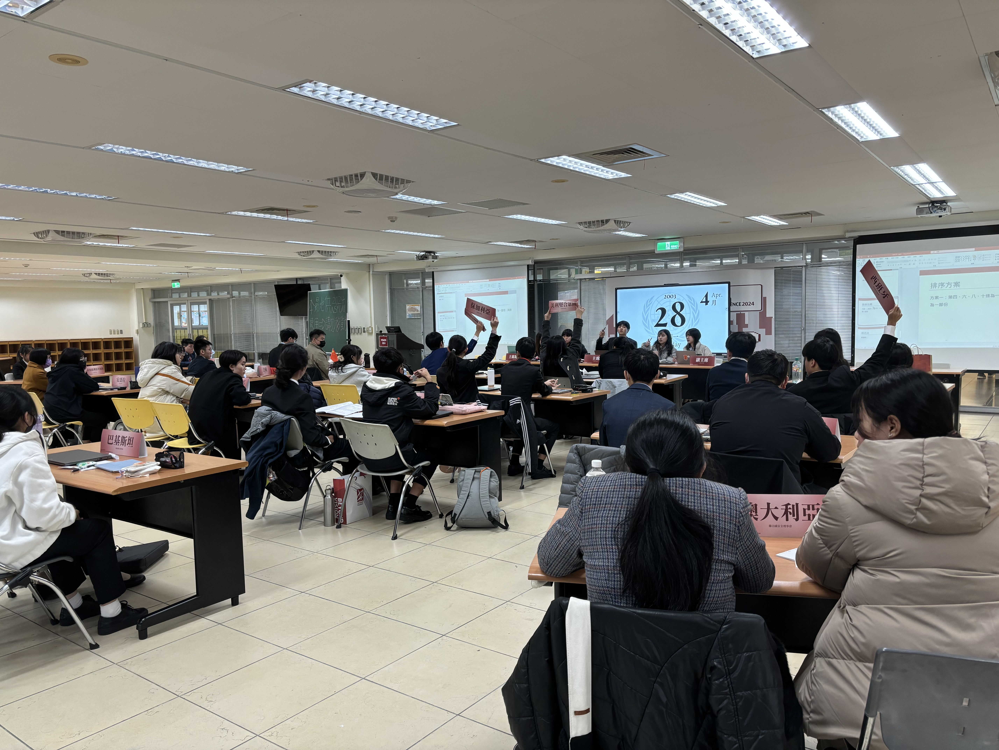
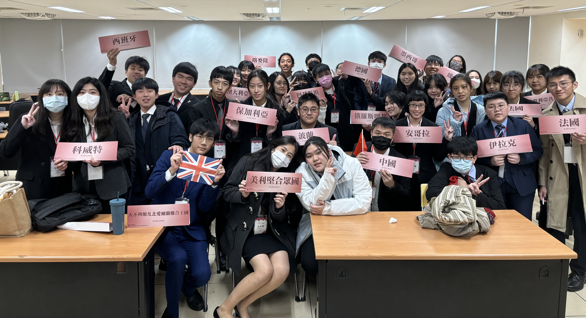
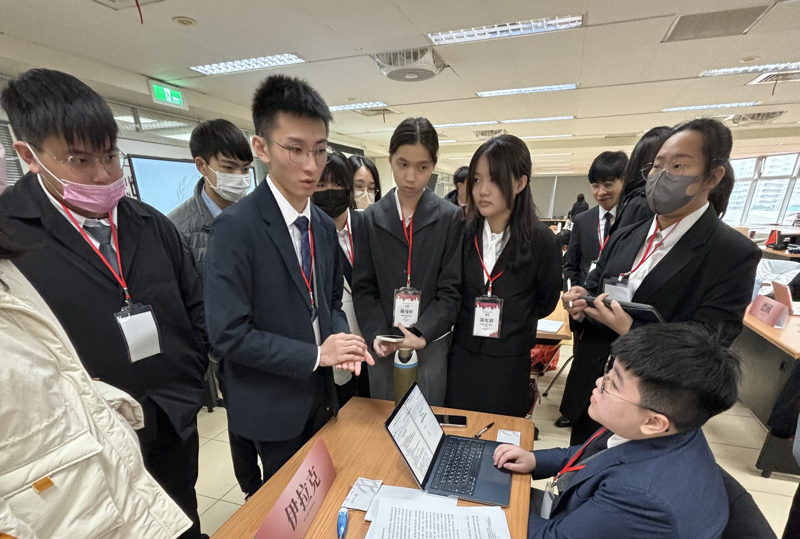
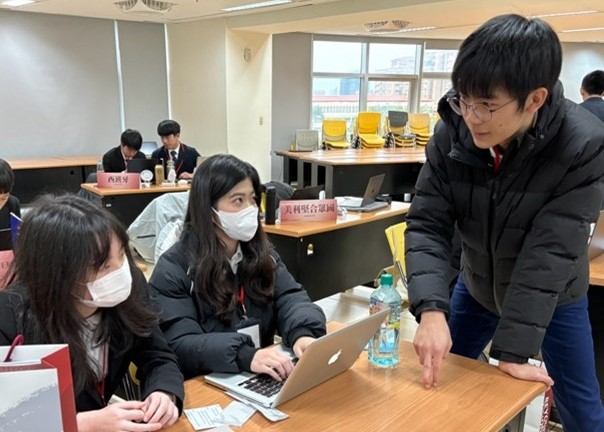

會議落幕！即使結果不盡人意，但過程無比精彩
2024/1/26 17:47

經過幾十天激烈辛辣的討論，在最後的議程由法國以及美英的國家集團，分別提出了自己的決議草案，共同為了中東地區，乃至全球和平做出貢獻。雖然在討論中，不同常任理事國都對對立的國家集團提出否決威脅，但經過閉門會議之後，五國達成分裂表決的協議，以換取雙方的共識。經過幾乎所有代表的投票，分裂表決被通過。此時，法國代表提出了更改表決順序之動議，並且得到多數國家的支持。因此，法國國家集團的決議草案先被表決，但好景不常，英國和美國分別在此時投下了反對並解釋，使得法國國家集團之決議草案因常任理事國的反對而遭到否決。英美後來解釋道：「因為該國家集團所提出的序言性條款於我方立場大相逕庭，大大侵害到我方之權益，因此投下反對票，以此維護我方之立場和保護區域和平。」輪到英美的決議草案表決，很可惜地遭到了來自法國等常任理事國的否決，使得此決議草案也未能通過。法國解釋道：「很遺憾，英美等國家集團的決議草案未能符合我方之立場，因此投下反對票。」最後，2003年聯合國安全理事會中的第4721次會議，未能達成共識並通過一份最終的決議草案。
本報社認為：據推測，在法國提出調換順序的動議之後，奪走了原英美兩國的表決順序優勢，引發英美兩國的不滿，因此報復性在投票環節投下了反對票。而法國也為了對付英美兩國的行為，也投下了反對票。此舉動不禁令人懷疑，之前的閉門會議與分裂表決之協商都全功盡棄，最後亡於國家集團之間的報復。
但是！本報社肯定所有國家在此次會議的所有努力都為了世界的和平做出一大進步，透過理性的言語溝通來解決目前的衝突，這是本報，聯合國，乃至世界所有人民所樂見的。在這個歷史性的聯合國會議中，本報社向每一位出席的代表表示由衷的感謝和鼓勵。您的參與代表了國際社會對於全球議題的共同關注，也反映了所有與會國家對於解決當前全球挑戰的承諾。

最後，感謝各位的付出和參與，期待著所有國家能共同取得成功，為世界和諧鋪平安穩的道路。
破壞江澤民穩定外交！中國代表立場鮮明，令人懷疑其背後目的
2024/1/26 14:08
2001年四月，中美軍機在中國近海上空相撞，兩國關係一度陷入十幾年來的最低點。而半年之後的911事件，卻為中美關系帶來了重大轉機。中國支持美國的反恐行動，美國則開始對中國的少數民族問題持較為寬容的態度，雙方互相收益。德國外交事務研究所的溫巴赫認為，權衡利弊之後，中國不可能因為伊拉克問題得罪美國，而出於現實政治的考慮，中國無法承擔中美關系惡化可能引發的負面影響。美國是中國外來直接投資的重要來源，對美貿易更是中國出口業的支柱。
本報發聞：「因此我們報社猜測就如在1441號決議表決時一樣，中國很有可能會再度保持中立，絕不會投反對票，行使否決權並不符合它的利益。我也想請大家注意，在1990、1991年，中國也沒有行使否決權，而是投了棄權票。但是！！！在過去的會議，我們已經明確看出中國隸屬於法國為首的反戰集團，並且曾提出否決威脅，強烈表明自己的立場。請問貴國代表，這是否有違背貴國領導人江澤民的穩定外交政策？難道貴國與伊拉克或法國有什麼利益交換，使得貴國立場改變嗎。」
中國回答：「我國想證明在之前的會議提出否決威脅，是想要保有中國對於對方國家集團的必要措施之手段。中國並不是完全百分之百的反戰，中國也在自由磋商階段，擔任雙方國家集團的溝通橋樑，取得議程順序之共識，並且我們會與法國等其他國家在之後提出一份修正案，和英美一同推進會議進度。」
本報社認為：中國言行不一，嘴上說著維持中立，搭起雙方溝通的橋樑，但不管是在檯面上抑或是在檯面下都早已鮮明的表達自己反戰的立場，說詞反覆，令人存疑。中國在經歷過911事件之後，與美國關係迅速升溫，並且在多面向中達成合作，共同打擊恐怖主義。而法國是第一個與中國建交的西方大國，也是最早於中國建立戰略合作夥伴，關係歷久彌堅。在此立場下，中國代表明顯違背其原有的外交政策，一面倒向法國的國家組織，可能將澆熄與美國剛建立不久的熱情，使得國際局勢更加不穩。本報認為中國須著重在會場中與各國協調以確保和平局勢，但依照此情勢，不經令人懷疑中國與法國私下是否有其他勾結，才會引發如此巨大的轉變。
伊拉克——德法細心呵護的中東未爆彈
2024/1/25 18:20
本報提問：「請問假使伊拉克真的有大規模毀滅武器，更多數人的生命該怎麼辦？伊拉克對於國際社會就是一個可怕的未爆彈，一旦海珊的一人政權不開心，發了幾枚飛彈，引發世界大戰。請問等到事態無法挽救法國，德國，以及其他國家才要回擊嗎？經過科威特，911一而再再而三的挑釁國際和平，你們有能力為伊拉克的行為背書嗎？請問除了伊拉克人民，美國，英國，法國，德國，等全世界的人民該怎麼辦？」
法國回答：「我們需要重啟第三方機構的認證，因為這個行為十分重大，所以希望能在會場中被所有代表積極討論，但對於伊拉克在歷史上的行為，我們應該以現在的角度去分析，我方將保持中立的態度。如果真的發現大規模毀滅武器，我們應該利用聯合國的維和部隊或決議來解決，但是我們也譴責英美對於伊拉克的瘋狂火力輸出。」
「我們幫助弱勢國家絕對不是爭取選票，伊拉克相對於英，美，科威特就是三大於一的概念，在這個情況伊拉克就是弱勢國家，我們只是希望保護該國的主權以及其人民。」 美國回答：「首先對法國誣陷我方感到深表遺憾，我方認為在海珊政權下對人民的酷刑，剝削了該國人民的基本權利，故我國對於伊拉克的出兵是為了維護世界的安全，以及區域的穩定。」
本報認為：再次重啟第三方的機構將耗時耗力，提供伊拉克恐怖主義更多可能的破壞。面對過去伊拉克所做出的行為，法國選擇原諒伊拉克之前的所作所為，完全信任伊拉克改邪歸正。在外交場合上永遠沒有永遠的朋友，只有因為利益而結合之朋友，所以本報合理懷疑法德與伊拉克私下的利益交換出於不善。在對於法國與其他起草國在工作文件中撰寫英美之目的，英美已強烈表達這就是一種污衊，破壞了原有的事實，扭曲英美為世界和平所做出的貢獻。而在回應弱勢國家之定義，法國明確指出該弱勢國家就是伊拉克，並且想藉由聯合國的名義幫助伊拉克，惡化當局情勢，為中東地區埋下更多未爆彈。法國等代表只注重到該國自身之利益，卻忽略了整個世界的穩定。
騙！騙！騙！德法與伊拉克的「和平洗錢」聯盟？
2024/1/25 14:05
2000年11月，海珊宣布伊拉克所有的原油輸出改為歐元計價，成為OPEC中唯一接受美元以外其他貨幣的原油輸出國。這被視為「反擊美國」的舉措，同時避免了聯合國制裁和美聯儲的審查。

海珊委託法國巴黎銀行（ BNP Paribas ）的紐約分行為外匯調度中心， 將伊國央行原有的六十億美元外匯存底，逐步轉換為歐元；同時將每天兩百萬桶、每桶三十八歐元（目前約二十三至二十六歐元）的交易額，轉入歐元帳戶，在禁運限制下，作為進口鋼鐵、電子、化學工業及軍事物資祕密付款的資金。甚至， BNP服務到家，還將海珊家族及幕僚要員的歐元祕密帳戶轉設在巴黎、法蘭克福、布魯塞爾及瑞士，使得美國的情報作業難上加難。
本報發問：「請問對於伊拉克，法國，德國等國家聯盟，這是為了維護增長歐元的影響力，施行實為洗錢的行為，幫助伊拉克躲避制裁，打著和平的利益勾結嗎？」
法德回答：「我方認為這僅是一種的經濟貨幣流通與正常的成長，也是對於歐元貨幣使用的幫助，所以對於洗錢問題的疑慮，完全沒有問題，因為這只是一種交易方式。」
「伊拉克在現今都只有與英美協談石油價格，我方認為伊拉克躲避制裁，需要國內做出決定，是否要繼續配合聯合國的調查，並且剛才伊拉克已經說要配合，所以可以再次檢核看看。這不是一個利益交換，這只是歐洲聯盟會員國的共識，所以這也是一個有共識的決定。」
伊拉克回答：「我們一定會為先前政府的決策錯誤負責，我方希望不應該由英美單獨私下制裁，應該提交聯合國或者是國際法院。」
本報認為：面對記者的提問，該國家還是皆以和平等說詞模糊問題焦點，且並未承認海珊家族及幕僚要員的歐元祕密帳戶等其他逃避制裁的行為。該國家集團表面上是以和平談判，完全否決英美等國的意見，百分之百相信和支持伊拉克的清白，難道這一次要繼續重蹈覆轍，使二戰悲劇重演。對於伊拉克的回答，貴國稱當時政府未能作出有效決定，但在之前貴國又極力撇清與恐怖組織的關係，說詞反覆，不竟令人起疑。伊拉克，法國，德國等其他國家，根本就是因利而聚，利盡而散，掩蓋了可能的恐怖主義蔓延，將使科威特和911事件的慘況遭到遺忘，促使更多衝突的發生。在會場中更利用票數優勢，忽略英美兩國的意見，特立獨行，使得會議難以進行， 以達成他們的「和平洗錢聯盟」。
披著「世界警察」的「國際流氓」——英美等國對中東的干涉
2024/1/24 21:34
經過兩伊戰爭，第一次波斯灣戰爭，以及911事件之後，中東局勢在歐美等國的加入下越發複雜。為了維護區域和平，為了抑制衝突爆發，本次聯合國安全理事會第4721會議將扮演著決定性的關鍵。然而有關伊拉克持有大規模毀滅性武器的情報（來自軍情六處和CIA）真實性和確定性，聯合國或是美國出兵穩定局勢的正當性，以及美伊各自心中的算盤，皆由待商榷和討論。
以下是針對各國所提出的問題與回答：

提問英國：「英國代表曾在自由磋商中明確指出將入侵伊拉克，並摧毀伊拉克政權，再建設基礎設施，與美國等其他支持國家共同瓜分利益，請問難道不是一種處於西方本位思考的利益掛勾嗎？」
英國回答：「我方對於記者的資料來源感到質疑，並堅決否認該說詞。我方出兵伊拉克，是為了維護區域乃至世界的和平，建立穩定而長久的局勢，絕無瓜分利益之說法。」
本報社認為：該代表極力否認本報記者在自由磋商階段親筆，親耳，親眼記錄之證據，更批評本報記者利用言論來搬弄是非。此舉並未消除了本報記者對於英國代表的疑問，並且加重了對於英美等國家集團在科威特駐兵真實目的的疑慮。（英國代表提問現場）
本報社懷疑，英美等國家集團打著穩定全球石油價格，維護區域和平的藉口，實則是因為地緣政治與戰略考量，希望透過此舉維護其自身利益在中東地區的影響力，並對伊拉克政權實施干涉，甚至摧毀伊拉克政權，完全未考慮到伊拉克人民的生命安全問題，藐視基本人權。英國代表說詞反覆，欺騙各國代表，對於自己的言行不負責任，令人擔心英國背後的詭計。
提問美國：「對於美國駐軍科威特，美國干涉中東地區難道不會造成該區域不穩定嗎？這難道不會構成其他周邊阿拉伯國家的威嚇，而造成鄰國國安情勢緊張嗎？」
美國回答：「我方認為我方的駐軍與鄰國的國安並未有直接影響，並且我方一直致力於中東地區安全的問題，不存在恐嚇或是威脅其他國家的行為。我方駐兵是為了維護國際油價的穩定，為維護世界和平而做出努力。」
本報社認為：該代表所提出的維護油價穩定之說詞十分令人懷疑，該理由不足以構成駐兵行為的決定性因素。並且，美國對科威特的駐兵，的的確確影響了該地區的自主意識與區域穩定，為中東埋下危機的種子，可能引發更多不必要的衝突。對於美國「世界警察」之名稱，雖然利用美國強大的武力和影響力，可以更有效快速地解決問題，但面對美國的霸權和考量到多少可能無辜生命的喪生，假使美國選擇出兵，「世界警察」難道不會變成「國際流氓」嗎？面對以美國為首等國家的鴨霸行為，值得各國深思。
2002年，美國以伊拉克政府擁有大殺傷力武器，並支援恐怖份子為由打算與其開戰。同年2月12日，時任國防部部長倫斯斐被問及有關的證據時，他解釋：
“據我們所知，有『已知的已知』，有些事，我們知道我們知道；我們也知道，有 『已知的未知』，也就是說，有些事，我們現在知道我們不知道。但是，同樣存在『未知的未知』——有些事，我們不知道我們不知道。” 在未有強度和可性度足以壓制一切相反證據並毫無疑問的證實問題時，發起一場預防性戰爭，請問美國，英國，西班牙等國家集團 出兵伊拉克究竟是為了石油？還是被錯誤的情報誤導？是為了地緣政治利益？還是單純的出於過度自信？亦或是對於911事件的美國，因為民眾渴望一場戰爭，不管是什麼戰爭，來找回民族自豪感？又或者，就像第一次世界大戰那樣，相互溝通的不順暢導致互不信任的國家陷入衝突？
我想問上述國家為了攻打海珊政權值得發動一場預防性戰爭嗎？請問一旦開戰，殘局將由誰來處理呢？這是難道不是西方自以為是的表現，認為他們可以按照自己的意願重塑一個國家和地區秩序呢？
英國回答：「伊拉克在之前擁有許多毀滅性武器，並且也找不到毀滅的證據，海珊政權同時也發起了科索沃戰爭。英國在二戰之後已經吸取教訓，我方認為其不會在重蹈覆轍，我們要講危機扼殺在搖籃裡，那請問法國呢？」
美國回答：「伊拉克民生已經非常糟糕，預防性戰爭不符合我國的想法，我們發起戰爭的原因是為了解救海珊政權下被迫害的人民」
保加利亞回答：「我方為石油進口國，所以我們非常注重國際石油價格的穩定，但因之前伊拉克之前的一系列行為導致國際油價的漲跌，影響全球利益。因此，我們非常同意美國對於發動預防性戰爭的決議。」
本報社認為：對於該國家集團所提出來的回答，並未正面回覆本報社所提出問題，儼然是在「打太極」。對於保加利亞的回覆，貴國有提及貴國是石油進口國，因此支持美國的預防性戰爭，以此保障自己的經濟利益。本報社認為，上述回答都是從西方本位出發，忽略了伊拉克人民的基本生命權，生存權，國家主權等其他權利。對此，美國也沒有透露其預防性戰爭的真正目的。本報社懷疑，在911事件之後，美國為了回覆自己世界警察的名譽，安撫受傷的國內人民，或許更可能是為了選舉的選票，因此想要發動一場戰爭，找回‘Make America Great Again’的驕傲感。而對於英國的回答，本報社認為，如果在缺乏決定性證據下發動預防性戰爭，將使原本的二戰受害國成為中東戰場的加害國，引發阿拉伯半島更多的危機。對於上述幾國的論事，究竟是為了世界和平，還是個人自身利益還有待商榷。
Previous Page
Next Page